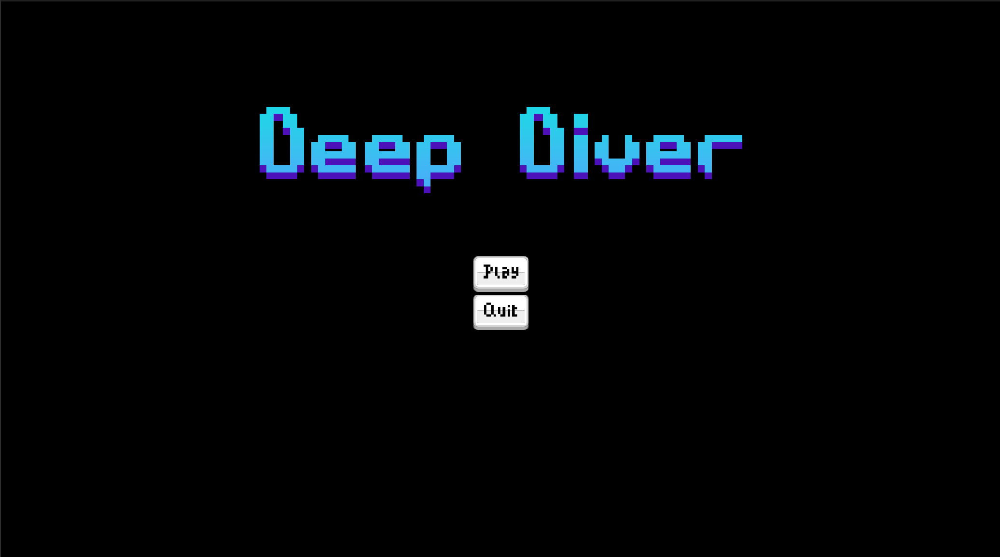
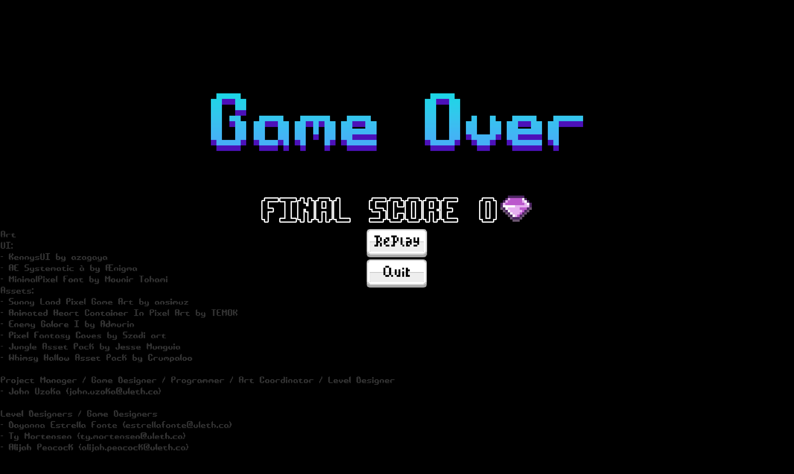

Project 1
Deep Diver
A 2D platformer made in Godot engine with different types of enemies where you dive deeper through randomized levels, gaining more loot the deeper you go, but also increasing in difficulty.

The Concept
This game was built around a simple risk-versus-reward loop: dive deeper into a cavern, face higher difficulty, and earn greater rewards. The further down you go, the more you stand to gain or lose. It's a 2D platformer that pushes players to ask themselves, "Is one more level worth it?"
My Role
This was a collaborative project where I stepped into multiple roles: Project Manager, Game Designer, Base Game Prototype Developer, Programmer, Art Coordinator, and Level Designer. I coordinated my teammates, who focused on level creation, while I handled the core systems, design vision, and overall delivery.
What I Built
- Player character - Responsive platformer movement with tuned jumping trajectory and gravity. Getting the feel right was essential for a Mario-style game.
- Three enemy types
- Stationary enemy that jumps at the player when in range (killable by stomping)
- Left-right patrolling enemy (also killable by stomping)
- Flying enemy that moves left to right (unkillable, just something you have to avoid)
- Randomized level system - The game has 3 stages, each with a set of levels that shuffle on every playthrough. We chose randomization over a fully procedural system given our 5-week timeline. It gave us variety without overcomplicating development.
- Player health and coin system - Tracked resources that feed into the risk/reward loop.
- Start and end game menus - Clean entry and exit points for the player experience.
The Design Process
Randomization was a core goal from the start. We wanted each run to feel fresh, but with only five weeks, a full procedural generation system wasn't realistic. So we designed a randomized level selector instead, simpler to implement, but still effective at creating variety.
I led that decision and coordinated with my teammates to make sure the level pieces they built could slot cleanly into the randomized structure.
The Hardest Part: Collisions
I didn't realize how crucial precise collisions were for a platformer until I was deep in it. In a Mario-style game, every pixel matters. Balancing the physics with gameplay collisions was genuinely difficult, jump timing, landing detection, enemy stomping, all of it had to feel fair. I went through several iterations, but I eventually found solutions that made everything work smoothly.
Asset Sourcing
All assets came from itch.io. With a tight timeline, sourcing externally let us focus our energy on systems and design rather than creating art from scratch.
What I Learned About Leadership
This project was my first time leading a small team in a game dev environment. I had to coordinate work, make design calls, and keep us moving toward a shared vision, all while building the core systems myself. It taught me how to communicate across roles, when to make a final call, and how to trust teammates to handle their pieces while I handled mine.
Final Thought
If you'd like to try it, here's the compiled prototype. Windows might give a virus warning (common for uncompiled builds), but it's safe.
https://github.com/JohnUzoka/Deep-Diver-Game/releases/tag/prototype
It's not a big game, but it's proof that I can learn a new engine, lead a team, and ship something playable under a deadline. And I'm proud of that.
Project Media


